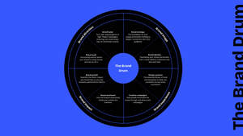

Trade Mark Journal No.2026/007 13 February 2026
UK00004332260 29 January 2026 (35,42)

- Class 35
- Design of advertising logos; Advertising services to create corporate and brand identity; Advertising and marketing; Advertising and marketing consultancy; Brand creation services (advertising and promotion); Brand positioning; Marketing; Advertising services to create brand identity for others; Brand strategy services; Brand positioning services; Advertising copywriting; Influencer marketing; Advertising, promotional and marketing services; Advertising, marketing and promotional services; Marketing, advertising, and promotional services; Promotional marketing; Design of advertising brochures; Advertising and marketing services; Copywriting for advertising and promotional purposes; Product marketing; Advertising, marketing and promotion services; Marketing, advertising and promotion services; Business marketing consultancy; Design of advertising flyers; Marketing consultancy; Consultancy services relating to advertising, publicity and marketing; Promotion [advertising] of business; Developing promotional campaigns for business; Marketing consulting; Brand creation services; Business marketing services; Graphic advertising services; Design of marketing surveys; Distribution of advertising, marketing and promotional material; Digital marketing; Organisation of customer loyalty programs for commercial, promotional or advertising purposes; Consultancy relating to the organisation of promotional campaigns for business; Promotional marketing services using audiovisual media; Consultancy regarding advertising communications strategy; Consultancy relating to business advertising; Marketing services; Targeted marketing; Business marketing consulting services; Copywriting; Dissemination of advertising, marketing and publicity materials; Corporate identity services; Advertising; Advertising, marketing and promotional consultancy, advisory and assistance services; Design of advertising materials; Advertising and publicity; Publicity and advertising; Investigations of marketing strategy; Marketing agency services; Advertising and publicity services; Advertising services for the promotion of e-commerce; Brand evaluation services; Advertising and promotional services; Promotional and advertising services; Promotional advertising services; Development of marketing concepts; Consultancy relating to marketing; Business marketing consultation services; Customer loyalty services for commercial, promotional and/or advertising purposes; Event marketing; Promotion, advertising and marketing of on-line websites; Creative marketing plan development services; Product merchandising; Business advertising services relating to franchising; On-line advertising and marketing services; Development of advertising concepts; Advertising and marketing services provided by means of social media; Consumer profiling for commercial or marketing purposes; Brand testing; Research services relating to advertising and marketing; Business consultancy services relating to the marketing of fund raising campaigns; Consultancy regarding advertising communication strategies; Developing promotional campaigns for businesses; Marketing management advice; Referral marketing; Advertising and promotion services; Development of promotional campaigns; Planning of marketing strategies; Direct marketing consulting; Advertising planning; Advertising and marketing services provided by means of blogging; Consultancy relating to demographics for marketing purposes; Professional consultancy relating to marketing; Corporate management consultancy; Preparation of advertising campaigns; Digital advertising services; Marketing analysis; Business consultation relating to advertising; Consultancy relating to advertising; Business advice relating to marketing; Marketing (Business advice relating to -); Business strategy services; Promotional management of celebrities; Business assistance relating to corporate identity.
- Class 42
- Design of logos for corporate identity; Design of graphics and of livery for corporate identity; Brand design services; Design of brand names; Logo design services; Design services (Packaging -); Design services for packaging; Packaging design services; Packaging design; Design of packaging; Graphic design services; Graphic design of promotional materials; Designing websites for advertising purposes; Consumer product design; Website design consultancy; Design consultancy.
Against Ordinary Limted